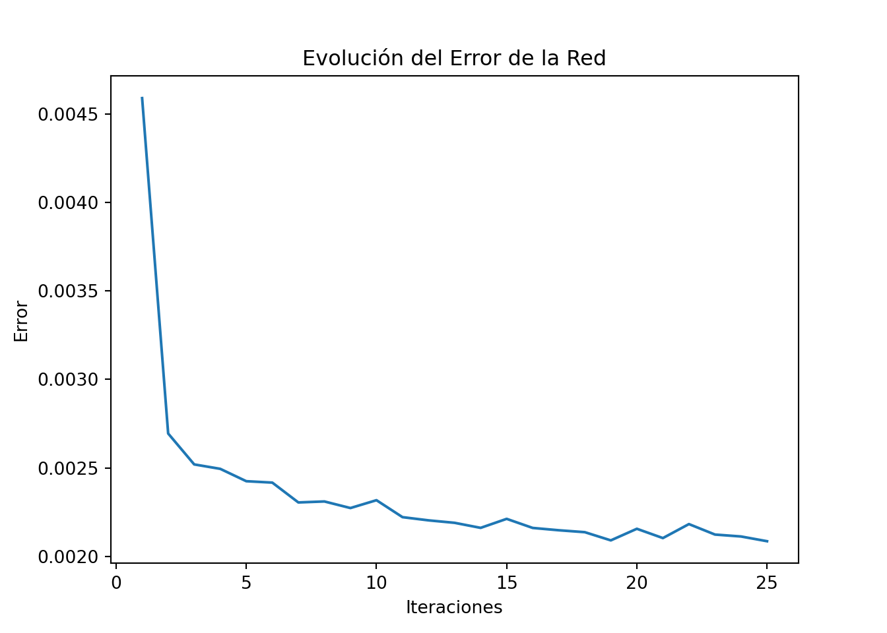

Capitulo 4 Analisis Preliminar
import yfinance as yf
import pandas as pd
import matplotlib.pyplot as plt
# Descargar los datos
data = yf.download("COP=X", start="2017-01-01", end="2022-12-31")
# Obtener el año de cada fecha##
[*********************100%***********************] 1 of 1 completeddata['Year'] = data.index.year
# Estadísticas descriptivas por años
yearly_stats = data.groupby('Year')['Close'].describe()
# Graficar boxplots por año
plt.figure(figsize=(10, 6))
data.boxplot(column='Close', by='Year', vert=False)
plt.xlabel('Precio de cierre')
plt.ylabel('Año')
plt.title('Gráfico de caja y bigotes por año - Precio de cierre de COP=X')
plt.grid(True)
# Graficar dispersión de precios de cierre por año
plt.figure(figsize=(10, 6))
for year, year_data in data.groupby('Year'):
plt.scatter(year_data.index, year_data['Close'], label=str(year), alpha=0.7)
plt.xlabel('Fecha')
plt.ylabel('Precio de cierre')
plt.title('Dispersión de precios de cierre por año - COP=X')
plt.legend(title='Año')
plt.grid(True)
plt.show() Inicialmente, se presenta graficos descriptivos sobre el precio de cierre del precio de peso colombiano (COP) con relación al dolar estado unidense (USD). Se observa, en el diagrama de cajas y bigotes, que el precio tiene fluaciones regulares en los deferentes años, sin valores atipicos destacables, con incrementos con el paso de los años. Es de anotar que la mayor amplitud de los datos de precio, y por tanto una mayor fluctuación de la tasa, se presenta en el reciente año 2022.
Para el grafico de dispesión en los años evaluados, se muestra claramente el ascenso de la tasa de cambio COL/USD. Mostrandose con mayor dispersión de los datos en los años 2020 y 2022.